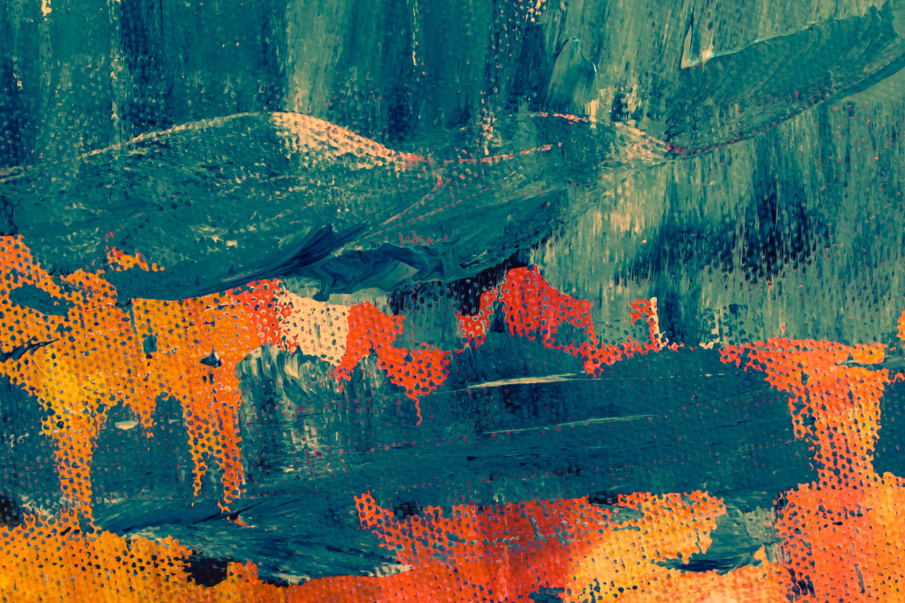

<navbar id="navbar" class="app-navbar">
        <div class="navbar-background-container">
          <picture>
              <source srcset="
                  ../images/beer-400.jpg 400w,
                  ../images/beer-600.jpg 600w,
                  ../images/beer-1200.jpg 1200w,
                  ../images/beer-2000.jpg 2000w,
                ">
                
          </picture>
        </div>
        <div class="navbar-top">
            <div class="navbar-logo">
                <a href="/"><i class="fas fa-beer"></i> BEERFLIX</a>
              </div>
              <div class="navbar-icon">
                  <i id="menu-open" class="fas fa-bars"></i>
                  <i id="menu-close" class="fas fa-times"></i>
              </div>
        </div>
        <div class="navbar-bottom">
            <div class="search-filter-container">
                <form id="search-form" class="search-filter-input">
                  <input placeholder="Search your beer" class="input search" type="text">
                  <button type="submit" class="button search"><i id="navbar-search" class="fas fa-search"></i></button>
                </form>
              </div>
              <div class="date-filter-container">
                  <p>Search by year:</p>
                  <div class="date-buttons">

                  </div>
              </div>
        </div>
</navbar>